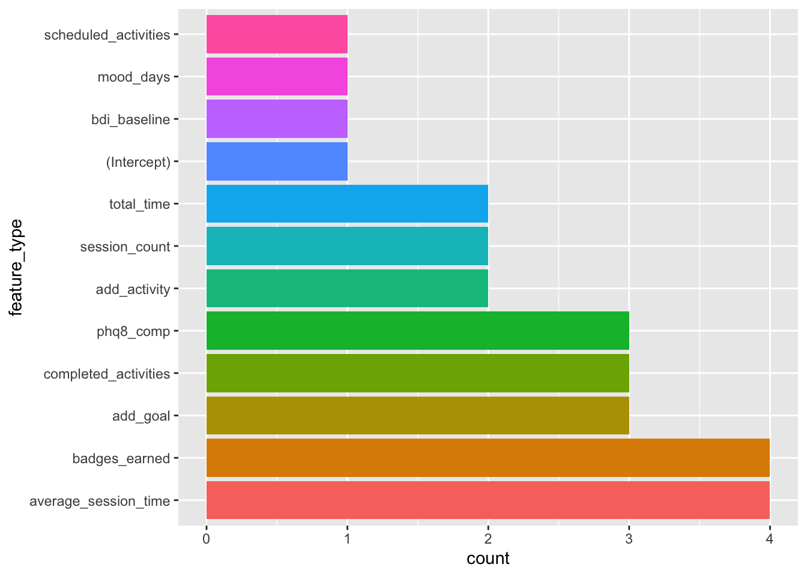
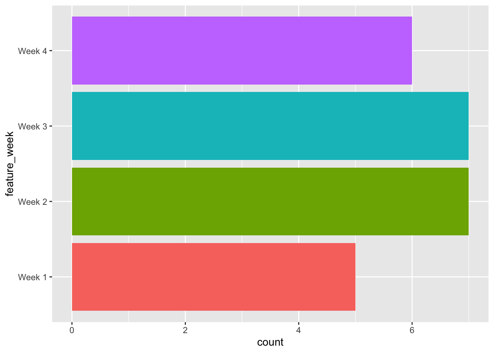

library(glmnet)
library(tidyverse)
library(tidymodels)Analysis Workflow Step 4: Select & fit final model
Setup
Load libraries
Source functions file
source("fun_moodivate.R")This functions file (fun_moodivate.R) contains many functions that are used throughout the Moodivate project analysis scripts. Functions split data, fit and evaluate models, and provide helper functionality for the modeling process. See all code building functions within fun_moodivate.R.
Read in data
To ensure all proposed analyses are feasible and to specify analysis steps as precisely as possible, we continue to conduct our proposed analyses using a shuffled (i.e., randomized) version of our dataset. Following testing, our analyses will follow these scripts exactly using our real data.
d <- read_csv("~/Desktop/internship/moodivate/toy_data.csv",
show_col_types = FALSE) |>
glimpse()Rows: 342
Columns: 43
$ record_id <dbl> 3, 4, 13, 16, 19, 25, 55, 58, 68, 74, 75, 77, …
$ session_count_w1 <dbl> 26, 1, 5, 1, 13, 10, 2, 36, 4, 15, 11, 18, 12,…
$ session_count_w2 <dbl> 41, 0, 3, 6, 13, 5, 1, 14, 0, 16, 4, 7, 8, 7, …
$ session_count_w3 <dbl> 31, 0, 4, 12, 10, 8, 1, 16, 2, 11, 0, 9, 5, 3,…
$ session_count_w4 <dbl> 23, 0, 1, 9, 18, 5, 0, 15, 0, 10, 0, 4, 0, 3, …
$ total_time_w1 <dbl> 8025, 763, 1388, 364, 2957, 1849, 221, 4456, 8…
$ total_time_w2 <dbl> 7254, 0, 394, 1055, 1628, 328, 58, 929, 0, 121…
$ total_time_w3 <dbl> 2894, 0, 310, 928, 1107, 801, 237, 1496, 158, …
$ total_time_w4 <dbl> 3822, 0, 95, 713, 1793, 552, 0, 1296, 0, 1235,…
$ average_session_time_w1 <dbl> 309, 763, 278, 364, 227, 185, 111, 124, 202, 1…
$ average_session_time_w2 <dbl> 177, 0, 131, 176, 125, 66, 58, 66, 0, 76, 99, …
$ average_session_time_w3 <dbl> 93, 0, 78, 77, 111, 100, 237, 94, 79, 76, 0, 4…
$ average_session_time_w4 <dbl> 166, 0, 95, 79, 100, 110, 0, 86, 0, 124, 0, 52…
$ add_activity_w1 <dbl> 2, 1, 1, 1, 0, 2, 1, 14, 1, 1, 5, 4, 1, 2, 1, …
$ add_activity_w2 <dbl> 4, 0, 0, 0, 0, 0, 0, 1, 0, 0, 0, 0, 0, 0, 0, 2…
$ add_activity_w3 <dbl> 2, 0, 0, 0, 0, 0, 0, 1, 0, 0, 0, 0, 0, 0, 0, 1…
$ add_activity_w4 <dbl> 0, 0, 0, 0, 0, 0, 0, 2, 0, 0, 0, 0, 0, 0, 1, 2…
$ scheduled_activities_w1 <dbl> 165, 1, 3, 18, 7, 26, 7, 70, 1, 87, 21, 48, 10…
$ scheduled_activities_w2 <dbl> 155, 0, 1, 20, 5, 25, 7, 53, 0, 84, 15, 49, 4,…
$ scheduled_activities_w3 <dbl> 152, 0, 2, 17, 3, 25, 7, 59, 0, 82, 0, 48, 5, …
$ scheduled_activities_w4 <dbl> 148, 0, 0, 17, 6, 25, 0, 58, 0, 82, 0, 48, 0, …
$ completed_activities_w1 <dbl> 76, 0, 2, 0, 3, 10, 0, 12, 0, 0, 20, 15, 6, 1,…
$ completed_activities_w2 <dbl> 129, 0, 0, 1, 2, 11, 0, 0, 0, 0, 1, 15, 0, 0, …
$ completed_activities_w3 <dbl> 114, 0, 2, 6, 3, 21, 0, 4, 0, 0, 0, 6, 5, 0, 2…
$ completed_activities_w4 <dbl> 82, 0, 0, 3, 5, 11, 0, 3, 0, 1, 0, 8, 0, 0, 0,…
$ add_goal_w1 <dbl> 6, 1, 2, 1, 2, 3, 1, 6, 1, 1, 2, 5, 7, 3, 4, 1…
$ add_goal_w2 <dbl> 3, 0, 0, 0, 1, 0, 0, 0, 0, 0, 0, 1, 0, 0, 0, 2…
$ add_goal_w3 <dbl> 1, 0, 1, 0, 0, 0, 0, 0, 0, 4, 0, 0, 0, 0, 0, 0…
$ add_goal_w4 <dbl> 0, 0, 0, 0, 1, 0, 0, 3, 0, 0, 0, 0, 0, 0, 1, 3…
$ badges_earned_w1 <dbl> 7, 2, 4, 1, 4, 6, 1, 8, 4, 5, 6, 10, 8, 6, 6, …
$ badges_earned_w2 <dbl> 7, 0, 1, 4, 2, 2, 0, 2, 0, 3, 2, 7, 2, 0, 0, 6…
$ badges_earned_w3 <dbl> 4, 0, 2, 3, 2, 3, 1, 3, 0, 4, 0, 2, 4, 2, 0, 4…
$ badges_earned_w4 <dbl> 4, 0, 0, 4, 2, 4, 0, 3, 0, 4, 0, 1, 0, 2, 4, 5…
$ mood_days_wk1 <dbl> 5, 1, 3, 0, 5, 4, 0, 5, 1, 7, 2, 6, 5, 3, 6, 6…
$ mood_days_wk2 <dbl> 6, 0, 3, 3, 3, 4, 0, 5, 0, 6, 1, 3, 6, 2, 3, 7…
$ mood_days_wk3 <dbl> 6, 0, 2, 2, 3, 4, 1, 6, 1, 7, 0, 3, 3, 2, 2, 7…
$ mood_days_wk4 <dbl> 6, 0, 1, 3, 6, 4, 0, 4, 0, 5, 0, 2, 0, 2, 5, 7…
$ phq8_comp_wk1 <dbl> 1, 0, 1, 0, 1, 1, 0, 1, 1, 1, 1, 1, 1, 1, 1, 1…
$ phq8_comp_wk2 <dbl> 1, 0, 1, 1, 0, 0, 0, 0, 0, 0, 0, 1, 0, 0, 0, 1…
$ phq8_comp_wk3 <dbl> 0, 0, 0, 1, 1, 1, 0, 1, 0, 1, 0, 0, 1, 1, 0, 0…
$ phq8_comp_wk4 <dbl> 1, 0, 0, 1, 0, 1, 0, 0, 0, 0, 0, 1, 0, 1, 1, 1…
$ bdi_baseline <dbl> 29, 41, 35, 33, 37, 18, 11, 40, 13, 36, 42, 27…
$ bdi_outcome <dbl> 0, 1, 1, 1, 1, 0, 1, 0, 0, 0, 1, 1, 1, 1, 1, 1…Prepare data
We prepare our data in the same way as all previous scripts.
Set up outcome variable levels
y_col_name <- "bdi_outcome"
y_level_pos <- "non_responder"
y_level_neg <- "responder"Class variables & set factor levels
d <- d |>
# rename outcome to y
rename(y = !!y_col_name) |>
mutate(y = case_when(
y == 0 ~ "non_responder",
y == 1 ~ "responder",
TRUE ~ NA_character_)) %>%
# y as a factor with two levels, positive level first
mutate(y = factor(y, levels = c(!!y_level_pos,
!!y_level_neg))) |>
# standardize naming
rename_with(~ str_replace(.x, "_w1", "_wk1")) |>
rename_with(~ str_replace(.x, "_w2", "_wk2")) |>
rename_with(~ str_replace(.x, "_w3", "_wk3")) |>
rename_with(~ str_replace(.x, "_w4", "_wk4")) |>
# move bdi_baseline to be first variable in dataset for penalty.factor
relocate(bdi_baseline) Divide data
Set cross-validation parameters
Following nested cross-validation conducted in scripts 01-03, the final step is to fit and select models using the inner loop CV but in our entire dataset. Consequently, we use one repeat of 10-fold CV. Performance metrics from this round of CV will not be used for model evaluation; they will only be used for selecting a final model configuration.
cv_resample_type <- "kfold"
cv_resample <- "1_x_10"
seed_splits <- 111594Make splits
Divide data using make_splits() function (from fun_moodivate.R). We are stratifying by the outcome variable y to ensure equal distribution of outcome classes across all inner and outer folds.
splits <- d |>
make_splits(cv_resample_type, cv_resample, cv_outer_resample,
cv_inner_resample, the_seed = seed_splits,
strata = "y")Set up model configurations
Possible model configurations are defined identically to previous scripts 01-03.
algorithm <- "glmnet"
ml_mode <- "classification"
# alpha (mixture)
hp1_glmnet <- c(0, seq(.1, 1, length.out = 10))
# lambda (penalty)
hp2_glmnet_min <- -8 # min for penalty grid - will be passed into exp(seq(min, max, length.out = out))
hp2_glmnet_max <- 2 # max for penalty grid
hp2_glmnet_out <- 100 # length of penalty gridMake configurations tibble
This is a grid expansion of the splits, hyperparameters, and feature sets. Each row in the tibble will serve as a model configuration that can then be fit below. This tibble will also be used to connect results to model configurations.
Extract CV parameters from strings
n_repeats <- as.numeric(str_remove(cv_resample,
"_x_\\d{1,2}"))
n_folds <- as.numeric(str_remove(cv_resample,
"\\d{1,3}_x_"))
split_num <- 1:(n_repeats * n_folds)Make configurations grid
configs <- expand_grid(split_num = split_num,
feature_set = c("thru_wk2", "thru_wk3", "thru_wk4"),
hp1 = hp1_glmnet,
hp2 = NA_integer_) |>
tibble::rownames_to_column("config_num") |>
mutate(config_num = as.numeric(config_num))
glimpse(configs)Rows: 330
Columns: 5
$ config_num <dbl> 1, 2, 3, 4, 5, 6, 7, 8, 9, 10, 11, 12, 13, 14, 15, 16, 17,…
$ split_num <int> 1, 1, 1, 1, 1, 1, 1, 1, 1, 1, 1, 1, 1, 1, 1, 1, 1, 1, 1, 1…
$ feature_set <chr> "thru_wk2", "thru_wk2", "thru_wk2", "thru_wk2", "thru_wk2"…
$ hp1 <dbl> 0.0, 0.1, 0.2, 0.3, 0.4, 0.5, 0.6, 0.7, 0.8, 0.9, 1.0, 0.0…
$ hp2 <int> NA, NA, NA, NA, NA, NA, NA, NA, NA, NA, NA, NA, NA, NA, NA…Feature sets are specific combinations of features. Here, we are fitting models separately that use data from weeks 1 & 2, weeks 1 through 3, and weeks 1 through 4 so that we can examine the trade-off between model performance and duration of data collection required before making a decision.
Note that hp2 (lambda/penalty) is listed as NA because each configuration will tune() across the 100 values set using hp2_glmnet_min, hp2_glmnet_max, and hp2_glmnet_out (length).
Fit models
As in previous scripts, we set up a wrapper function to map() over every model configuration (i.e., every row in the configs tibble). For each model configuration, we:
Filter down to only that configuration’s row in the model configurations tibble.
Build a recipe using the custom
build_recipe()function (in fun_moodivate.R).Define a vector of penalty weights, which will apply equal penalty weighting to all variables except
bdi_baseline, which will have a penalty weight of 0 and consequently will be included in all models.Fit model, and get model performance metrics using our custom
tune_model()from the fun_moodivate.R script. This function performs model tuning for the model configuration (defined byfeature_set,hp1, and combination of inner and outer folds) across our range of values ofhp2.Append model performance metrics to the configs tibble in a new
resultstibble.
fit_eval <- function(config_current, configs, d, splits) {
# filter single config row from configs
config <- configs |>
filter(config_num == config_current)
# build recipe
rec <- build_recipe(d = d, config = config)
# create penalty_weights vector using feature set dimensions
feat <- rec |>
prep(training = d, strings_as_factors = FALSE) |>
bake(new_data = NULL)
penalty_weights <- c(0, rep(1, ncol(feat) - 2))
rm(feat)
# fit model & get predictions and model metrics
results <- tune_model(config = config,
rec = rec,
splits = splits,
ml_mode = ml_mode,
cv_resample_type = cv_resample_type,
hp2_glmnet_min = hp2_glmnet_min,
hp2_glmnet_max = hp2_glmnet_max,
hp2_glmnet_out = hp2_glmnet_out,
y_level_pos = y_level_pos,
penalty_weights = penalty_weights)
return(results)
}Fit models across all configurations
if (file.exists(str_c("~/Desktop/internship/moodivate/results_",
cv_resample_type, ".csv"))) {
results <- read_csv(str_c("~/Desktop/internship/moodivate/results_",
cv_resample_type, ".csv"),
show_col_types = F)
} else {
results <- 1:max(configs$config_num) |>
map(\(config_current) fit_eval(config_current, configs,
d, splits)) |>
list_rbind() %>%
mutate(new_config_num = 1:nrow(.))
}Glimpse results
This results file contains the information from the configuration grid, with model performance metrics appended to each row (i.e., model configuration). The grid has now been expanded to include each individual value for hp2 (lambda/penalty) that was considered within tune_models().
glimpse(results)Rows: 33,000
Columns: 12
$ config_num <dbl> 1, 1, 1, 1, 1, 1, 1, 1, 1, 1, 1, 1, 1, 1, 1, 1, 1, 1, 1…
$ split_num <dbl> 1, 1, 1, 1, 1, 1, 1, 1, 1, 1, 1, 1, 1, 1, 1, 1, 1, 1, 1…
$ feature_set <chr> "thru_wk2", "thru_wk2", "thru_wk2", "thru_wk2", "thru_w…
$ hp1 <dbl> 0, 0, 0, 0, 0, 0, 0, 0, 0, 0, 0, 0, 0, 0, 0, 0, 0, 0, 0…
$ hp2 <dbl> 0.0003354626, 0.0003711182, 0.0004105636, 0.0004542015,…
$ accuracy <dbl> 0.6571429, 0.6571429, 0.6571429, 0.6571429, 0.6571429, …
$ sens <dbl> 0.6470588, 0.6470588, 0.6470588, 0.6470588, 0.6470588, …
$ spec <dbl> 0.6666667, 0.6666667, 0.6666667, 0.6666667, 0.6666667, …
$ ppv <dbl> 0.6470588, 0.6470588, 0.6470588, 0.6470588, 0.6470588, …
$ npv <dbl> 0.6666667, 0.6666667, 0.6666667, 0.6666667, 0.6666667, …
$ roc_auc <dbl> 0.6732026, 0.6732026, 0.6732026, 0.6732026, 0.6732026, …
$ new_config_num <dbl> 1, 2, 3, 4, 5, 6, 7, 8, 9, 10, 11, 12, 13, 14, 15, 16, …Save results
results |>
write_csv(str_c("~/Desktop/internship/moodivate/results_",
cv_resample_type, ".csv"))Select final model configurations
We now use average performance across the 10 held-out folds to select the best model configuration. As a reminder, performance metrics are being used only for selection and not for model evaluation. Evaluation was completed in the outer loop of nested cross-validation.
metrics_avg <- results |>
group_by(feature_set, hp1, hp2) |>
summarize(across(c(accuracy, roc_auc,
sens, spec, ppv, npv),
median),
n_jobs = n(), .groups = "drop") |>
relocate(n_jobs) |>
arrange(desc(roc_auc)) |>
ungroup()
glimpse(metrics_avg)Rows: 3,300
Columns: 10
$ n_jobs <int> 10, 10, 10, 10, 10, 10, 10, 10, 10, 10, 10, 10, 10, 10, 10…
$ feature_set <chr> "thru_wk4", "thru_wk4", "thru_wk4", "thru_wk4", "thru_wk4"…
$ hp1 <dbl> 0.8, 0.0, 1.0, 0.0, 0.9, 1.0, 0.8, 0.0, 1.0, 0.0, 0.0, 0.0…
$ hp2 <dbl> 0.007683448, 0.086774329, 0.005674816, 0.070901432, 0.0069…
$ accuracy <dbl> 0.4924242, 0.4777184, 0.4924242, 0.4777184, 0.4924242, 0.5…
$ roc_auc <dbl> 0.5519031, 0.5501730, 0.5485510, 0.5484429, 0.5484429, 0.5…
$ sens <dbl> 0.5312500, 0.5147059, 0.5147059, 0.4852941, 0.5312500, 0.5…
$ spec <dbl> 0.5718954, 0.5294118, 0.5718954, 0.5424837, 0.5718954, 0.5…
$ ppv <dbl> 0.4852941, 0.4686275, 0.4852941, 0.4686275, 0.4852941, 0.5…
$ npv <dbl> 0.5000000, 0.4868421, 0.5000000, 0.4868421, 0.5000000, 0.5…Select best model configuration for each feature set (through week 2 / through week 3 / through week 4).
best_config_thru_wk2 <- metrics_avg |>
filter(feature_set == "thru_wk2") |>
slice(1) |>
print()# A tibble: 1 × 10
n_jobs feature_set hp1 hp2 accuracy roc_auc sens spec ppv npv
<int> <chr> <dbl> <dbl> <dbl> <dbl> <dbl> <dbl> <dbl> <dbl>
1 10 thru_wk2 1 0.0524 0.507 0.531 0.324 0.618 0.5 0.511best_config_thru_wk3 <- metrics_avg |>
filter(feature_set == "thru_wk3") |>
slice(1) |>
print()# A tibble: 1 × 10
n_jobs feature_set hp1 hp2 accuracy roc_auc sens spec ppv npv
<int> <chr> <dbl> <dbl> <dbl> <dbl> <dbl> <dbl> <dbl> <dbl>
1 10 thru_wk3 0.9 0.0115 0.485 0.537 0.471 0.559 0.471 0.5best_config_thru_wk4 <- metrics_avg |>
filter(feature_set == "thru_wk4") |>
slice(1) |>
print()# A tibble: 1 × 10
n_jobs feature_set hp1 hp2 accuracy roc_auc sens spec ppv npv
<int> <chr> <dbl> <dbl> <dbl> <dbl> <dbl> <dbl> <dbl> <dbl>
1 10 thru_wk4 0.8 0.00768 0.492 0.552 0.531 0.572 0.485 0.5Save out best configurations for each feature set
best_config_thru_wk2 |>
write_csv(str_c("~/Desktop/internship/moodivate/best_config_thru_wk2.csv"))
best_config_thru_wk3 |>
write_csv(str_c("~/Desktop/internship/moodivate/best_config_thru_wk3.csv"))
best_config_thru_wk4 |>
write_csv(str_c("~/Desktop/internship/moodivate/best_config_thru_wk4.csv"))Fit final model
Ultimately, we will fit only one final model after having decided which feature set to favor (based on a performance vs. time-to-collect-data trade-off). This will be decided based on performance in the outer loop of nested cross-validation, not based on performance here in the final fitting stages.
Set best model configuration (selected feature set)
best_config <- best_config_thru_wk4Fit final model
rec <- build_recipe(d = d, config = best_config)
rec_prepped_full <- rec |>
prep(training = d, strings_as_factors = FALSE)
feat_all <- rec_prepped_full |>
bake(new_data = NULL)
penalty_weights <- c(0, rep(1, ncol(feat_all) - 2))
model_best_full <- fit_best_model(best_model = best_config,
feat = feat_all,
ml_mode = ml_mode,
algorithm = algorithm,
penalty_weights = penalty_weights)Model coefficients
NOTE: Coefficients are naturally inverted (i.e., positive class [“non-responder”] treated as first [vs. second] class). Here, we multiply coefficients by -1 to align the direction of coefficients with the rest of our analyses. Once flipped (i.e., as they appear below)…
A positive coefficient indicates that increases in the feature increase the likelihood of being a non-responder.
A negative coefficient indicates that increases in the feature decrease the likelihood of being a non-responder (i.e., increase the likelihood of responding).
model_tidy <- tidy(model_best_full)
model_tidy |>
write_csv("~/Desktop/internship/moodivate/model_best_tidy.csv")Table of all “retained” features (i.e., features whose parameter estimates were non-zero; parameter estimates of 0 indicate removal from the model via LASSO selection).
retained_vars <- model_tidy |>
mutate(estimate = estimate * -1) |>
filter(abs(estimate) > 0) |>
select(-penalty) |>
arrange(desc(abs(estimate)))
knitr::kable(retained_vars, digits = 4)| term | estimate |
|---|---|
| badges_earned_wk3 | 0.3488 |
| add_activity_wk3 | 0.2509 |
| badges_earned_wk4 | -0.2277 |
| phq8_comp_wk4 | 0.1808 |
| phq8_comp_wk3 | -0.1702 |
| average_session_time_wk2 | 0.1698 |
| session_count_wk3 | -0.1578 |
| total_time_wk1 | -0.1504 |
| total_time_wk2 | 0.1453 |
| bdi_baseline | -0.1446 |
| badges_earned_wk1 | -0.1440 |
| completed_activities_wk2 | -0.1421 |
| add_goal_wk1 | 0.1339 |
| completed_activities_wk4 | -0.1086 |
| scheduled_activities_wk3 | 0.0922 |
| add_goal_wk4 | -0.0898 |
| session_count_wk4 | -0.0585 |
| (Intercept) | -0.0498 |
| completed_activities_wk1 | -0.0483 |
| add_goal_wk2 | 0.0339 |
| add_activity_wk2 | -0.0265 |
| average_session_time_wk1 | -0.0226 |
| mood_days_wk3 | 0.0206 |
| average_session_time_wk3 | 0.0202 |
| badges_earned_wk2 | -0.0171 |
| phq8_comp_wk2 | -0.0089 |
| average_session_time_wk4 | -0.0034 |
We can also look at groupings of retained features by…
Feature type
Of note, bdi_baseline and (Intercept) can only have one feature as they do not repeat across weeks.
ret_vars_group <- retained_vars |>
separate(term, into = c("feature_type", "feature_week"),
sep = "_(?=wk\\d+)", remove = FALSE,
fill = "right")
ret_vars_group |>
select(feature_type, estimate) |>
mutate(feature_type = factor(feature_type)) |>
mutate(feature_type = fct_infreq(feature_type)) |>
ggplot(aes(x = feature_type, fill = feature_type)) +
geom_bar() +
coord_flip() +
theme(legend.position = "none")
Feature week
ret_vars_group |>
select(feature_week, estimate) |>
filter(!is.na(feature_week)) |>
mutate(feature_week = factor(feature_week,
levels = c("wk1", "wk2", "wk3", "wk4"),
labels = c("Week 1", "Week 2",
"Week 3", "Week 4"))) |>
ggplot(aes(x = feature_week, fill = feature_week)) +
geom_bar() +
coord_flip() +
theme(legend.position = "none")